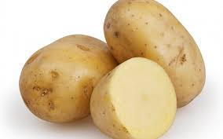
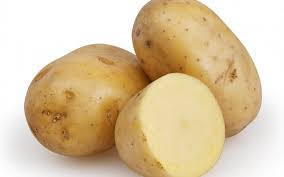

Does your banana have a few spots? They are actually sweeter this way, try out a new flavor!
Does your banana have a few spots? They are actually sweeter this way, try out a new flavor!Peel and freeze. Add some almond milk, sugar, then blend for healthier ice cream alternative.
Let them go pretty brown, then peel and have a greater starter for banana bread.
Slice and pour over cereal or oatmeal for added nutrient boost.
" class="foodpic" onmouseover="showProperties(this)" onmouseleave="document.getElementById('foodtips').innerHTML=' Hover Mouse over a food image below for some food waste reduction tips!';"> Before you do anything, stop! You do not need to peel beets. The skin is one of the most nutrient filled parts, totally safe to eat, and it saves you time.To roast, or not to roast. You can just slice and keep them around the fridge as a crisp salad topping, or a pretty color addition to your smoothie
Freezer's are heroes. If you do not think you can eat it before it goes bad, wash, slice and freeze. Cook as desired when ready
Want some roasting inspiration? Add garlic, rosemary and whatever hers are about to go bad in your fridge, lemon, salt and pepper.
" class="foodpic" onmouseover="showProperties(this)" onmouseleave="document.getElementById('foodtips').innerHTML=' Hover Mouse over a food image below for some food waste reduction tips!';"> If you can manage to not eat your the whole pack at once, freeze them and top breakfasts as needed.Cook on stovetop for a warm, syrup like topping for your yogurt, ice cream, pancakes, or anything you want.
Try canning!
" class="foodpic" onmouseover="showProperties(this)" onmouseleave="document.getElementById('foodtips').innerHTML=' Hover Mouse over a food image below for some food waste reduction tips!';"> Use stalks to make pesto. Seriously, try it.Pickle it! Not only can they last about 2 months in the fridge, but it's a healthy snack whenever you crave a salty, crunch treat. Bring water, vinegar, salt, and peppercorns to a simmer. Slice carrots and place in jar. Add vinegar mixture, spice as desired, let sit in fridge.
Freeze them!
" class="foodpic" onmouseover="showProperties(this)" onmouseleave="document.getElementById('foodtips').innerHTML=' Hover Mouse over a food image below for some food waste reduction tips!';"> Do yourself a favor and google Alison Roman's spicy noodle soup recipe featured on the NYT cooking page. I'll wait.Season and roast, then serve with anything, literally
Slice and freeze, because the freezer is your best friend.
" class="foodpic" onmouseover="showProperties(this)" onmouseleave="document.getElementById('foodtips').innerHTML=' Hover Mouse over a food image below for some food waste reduction tips!';"> Great choice! These last a long time in your fridge
Great choice! These last a long time in your fridgeSlice, season and back with some olive oil for a nice side to any soup.
Boil, dice and add to an omelet or scrambled eggs for a hearty, filling breakfast
No time to boil a potato? Wrap in moist paper towel, and microwave for about 5 minutes. If you have an easy way to cook it, you have an easy way to eat it.
" class="foodpic" onmouseover="showProperties(this)" onmouseleave="document.getElementById('foodtips').innerHTML=' Hover Mouse over a food image below for some food waste reduction tips!';"> Freeze it. Later cook it or add to smoothie of choice.Cook it on stovetop. You can season it, and by cooking it you drastically reduce the volume, so you can eat a lot more.
Look up a kale chip recipe, then substitute kale with spinach.
" class="foodpic" onmouseover="showProperties(this)" onmouseleave="document.getElementById('foodtips').innerHTML=' Hover Mouse over a food image below for some food waste reduction tips!';">